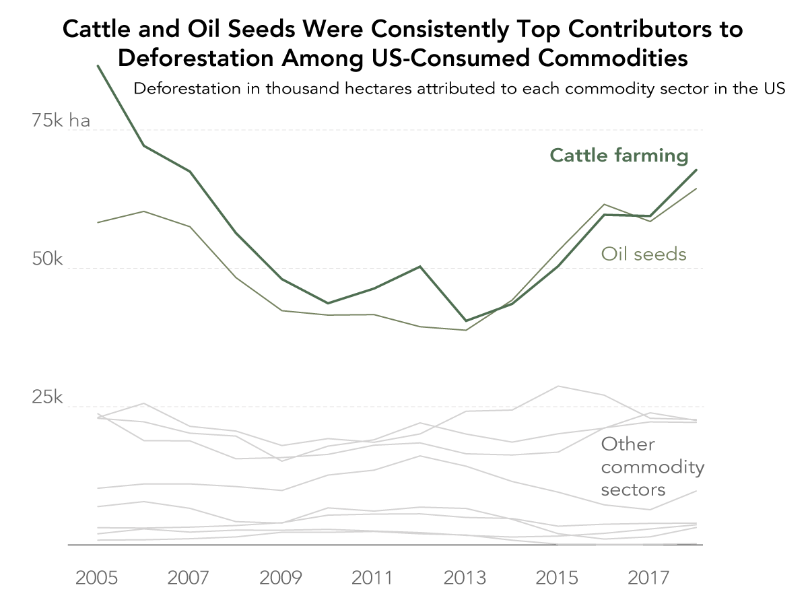
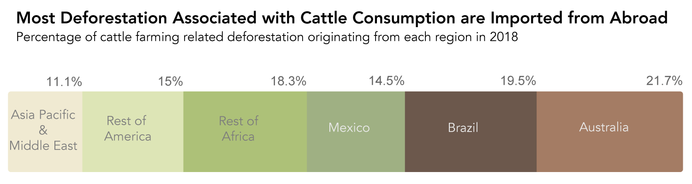
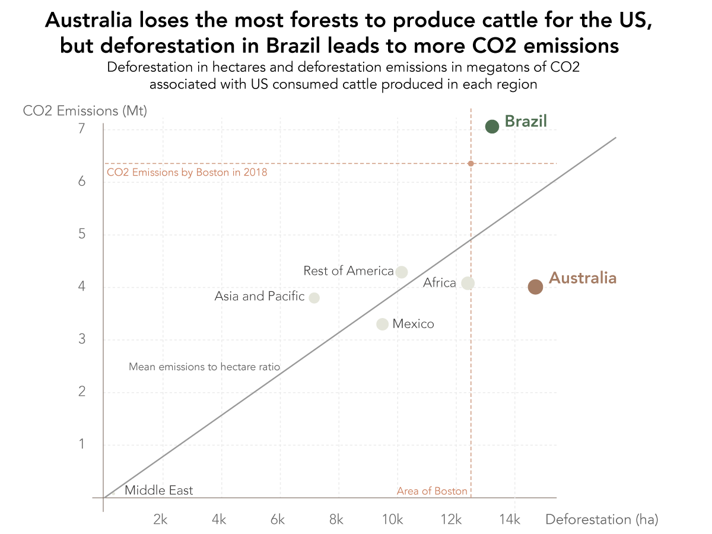
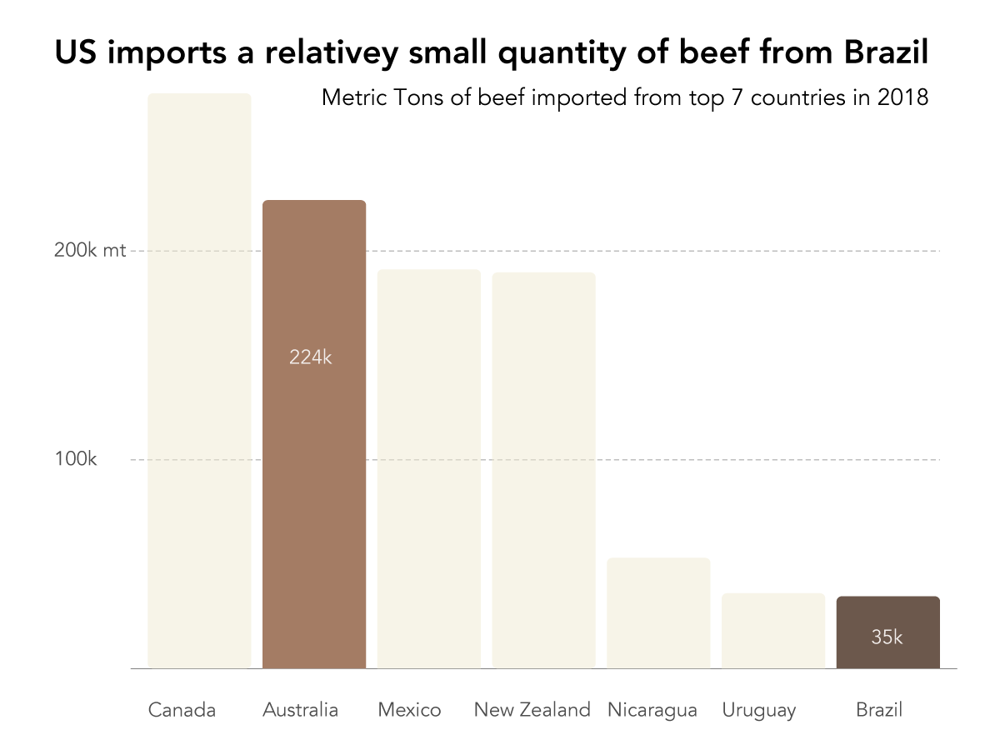
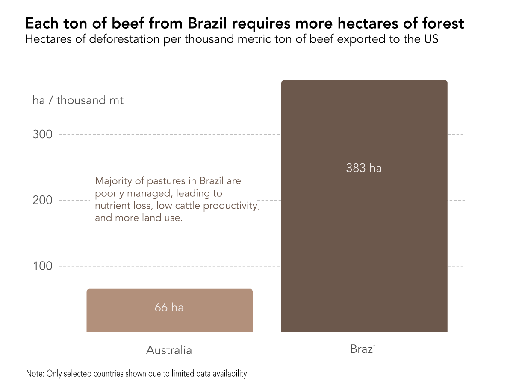
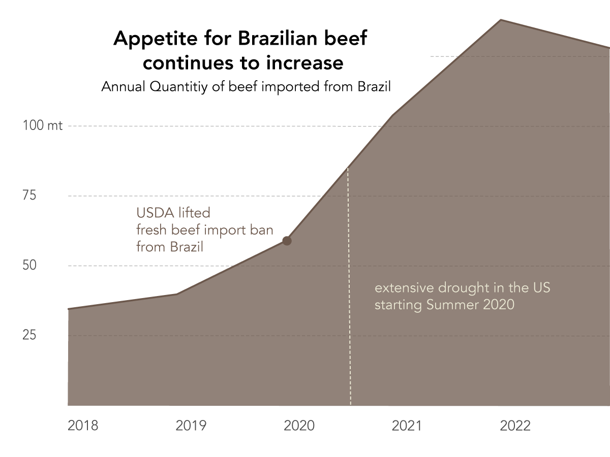

Selina Wang
My interest in this topic originated from my desire to understand the impacts of my own consumption on the environment. Because of the trading of commodities around the globe, the location of consumption and location of environmental impact can be very far apart. I was curious to untangle this relationship, so using data by Pendrill et al . I looked into the impacts of US consumed commodities on deforestation, and where these impacts occur.
Not surprisingly, cattle farming has consistently been one of the top contributors to deforestation.
But what’s interesting is that although roughly 90% of beef consumed in the US is produced domestically, most of the deforestation associated with US beef consumption is actually imported from abroad, with Australia, Brazil and Mexico being the three largest exporters of cattle related deforestation to the US.
Adding in the CO2 emissions associated with deforestation paints a slightly different picture. Although Australia loses the most forests in terms of area to produce cattle for the US, the cattle related deforestation imported from Brazil results in significantly higher CO2 emissions. This means that not all forests are equal. The Amazon rainforest in Brazil is a much larger carbon stock than forests in Australia, resulting in more CO2 emissions.
The quantity of deforestation the US imported from Brazil in 2018 alone was roughly 13,000 hectares, which resulted in roughly 7Mt of CO2 emissions. To put this into perspective, this is larger than the area of Boston and the amount of CO2 Boston emitted in 2018. This brings our attention to Brazil as the most worrisome source of beef.
Does this mean that we actually consume a large amount of beef from Brazil? Surprisingly, when we look at the quantity of beef imported from different countries in 2018, a very small proportion of those come from Brazil compared to other major beef exporters like Canada and Australia. Data Source
The reason for this seeming inconsistency becomes clear when we look at the area of deforestation per ton of beef. It turns out that pastures in Brazil are incredibly inefficient, requiring much more land to produce a ton of beef than other countries like Australia. A big reason for that is poorly managed pastures in Brazil, which lead to nutrient loss, low cattle productivity, and ultimately more land use (Source).
Unfortunately, since 2018, our appetite for Brazilian beef has continued to increase, due to various factors like the USDA lifting the fresh beef import ban from Brazil, and years of extensive drought in the US which reduced domestic beef production and increased the demand for imported beef.
I embarked on this data discovery journey wanting to understand the environmental impacts of my own consumption and be a more conscious consumer, but ended up unraveling more complex issues about trade, forest management and deforestation, most of which are way beyond the scope of what a single consumer can do. I want this to be a reminder that while we should continue to make conscious choices as consumers and believe that our actions will have an impact, individual consumers should not be the ones to take blame because there are bigger forces at play. Although the issue of cattle driven deforestation, just like any other environmental issue, seems alarming and depressing, I want to end on a positive note because change is possible and has happened before.
Brazil experienced a period of significant drop in deforestation rates in the past. Between 2005 and 2012, the amount of Amazon rainforest cut down each year fell by 70 percent. This is attributed to factors like increased conservation efforts in the Amazon forest, international financial aid to reduce deforestation, and a global agreement pushing the cattle industry to only raise cattle on existing farmland. During that period, farmers found ways to increase efficiency without expanding land. So while beef production had increased, deforestation had not (Source).
Even though the deforestation rate as gone up since 2013, the fact that change had happened in the past means that with the right incentives, change can happen again!